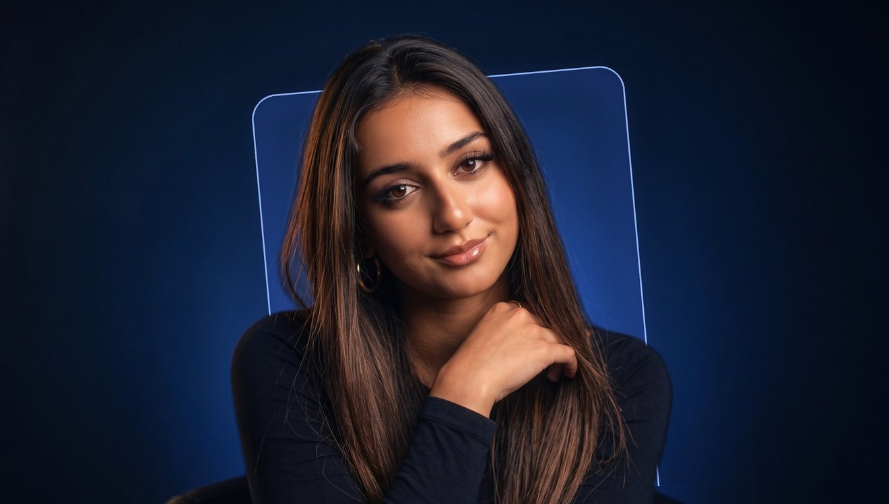
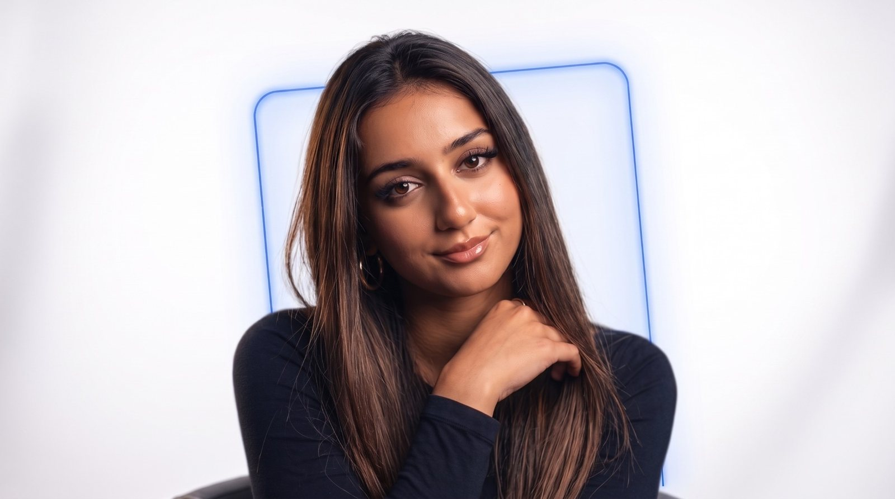
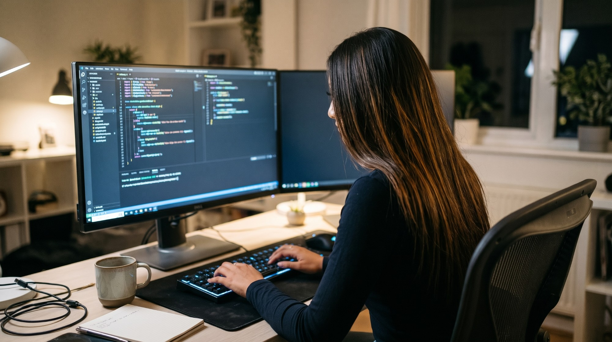

01 · Refonte
Voir l’étude de cas →
Edreams Factory
Clarifier une offre de logiciel sur mesure pour des dirigeants pressés.


Clarifier une offre de logiciel sur mesure pour des dirigeants pressés.
Transformer une offre B2B complexe en page qui donne envie d’appeler.
Organiser un voyage à plusieurs sans se perdre dans le chat de groupe.
Du premier entretien à la mise en ligne, c’est la même personne aux commandes. Rien ne se perd entre la maquette et le site.

Anissa B.
Le Prunenec
UX/UI Designer qui code
J’aide les marques à créer des sites et des applications clairs et utiles, de la recherche utilisateur jusqu’au code front-end.
Formée aux arts, puis au design UX/UI. Et je code moi-même une bonne partie de ce que je dessine.
Trouver l’équilibre entre beau et utile.
Un site à créer, une interface à repenser ? Écrivez-moi, je vous réponds rapidement.
Me contacter